4.6 Normal distribution
Normal distribution
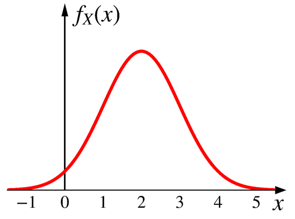
Arguably the most important distribution
Central limit theorem: The sum of many i.i.d.1 random variables approximately follows a normal distribution.
Standard normal distribution
A continuous RV \(Z\) is standard normal if it has a PDF
\[
f_Z(z)=\frac{1}{\sqrt{2\pi}}e^{-\frac{z^2}{2}}
\]

The factor \(\frac{1}{\sqrt{2\pi}}\) is to ensure the normalization property.
Normal distribution
A continuous RV \(X\) is normal if it has a PDF:
\[ f_X(x)=\frac{1}{\sigma\sqrt{2\pi}}e^{-\frac{1}{2}(\frac{x-\mu}{\sigma})^2} \]
\[ \text{where } \mu \text{ and } \sigma \text{ are its two parameters } (\sigma >0). \]
\[ X \sim \text{N}(\mu, \sigma^2) \]
\[ X \sim \text{N}(2, 1) \]
- The PDF is symmetric around \(\mu\).
- As \(X\) gets further from \(\mu\), the PDF decreases rapidly.
- The PDF is very close to 0 outside \(\mu \pm 3\sigma\).
Interactive visualization
Normal distribution
\[ \begin{aligned} X &\sim \text{N}(\mu, \sigma^2) \\ \\ f_X(x)&=\frac{1}{\sigma\sqrt{2\pi}}e^{-\frac{1}{2}(\frac{x-\mu}{\sigma})^2} \\ \\ \text{E}[X]&=\mu \\ \\ \text{var}(X)&=\sigma^2 \\ \end{aligned} \]
First, we show that the expected value of a standard normal RV \(Z \sim \text{N}(0, 1)\) is zero.
\[ \begin{aligned} f_Z(z)&=\frac{1}{\sqrt{2\pi}}e^{-\frac{z^2}{2}} \\ \\ \text{E}[Z]&=\int_{-\infty}^{+\infty}z(\frac{1}{\sqrt{2\pi}}e^{-\frac{z^2}{2}})dz=0 \\ \end{aligned} \]
The integration above is 0 as for any odd function \(g(x)\) (i.e., \(g(-x)=-g(x)\)), we have \(\int_{-a}^a g(x)dx=0\).
Let
\[Z=\frac{X-\mu}{\sigma} \;\;\;\;(\text{or } X=\sigma Z+\mu)\]
We have
\[f_X(x)=\frac{1}{\sigma\sqrt{2\pi}}e^{-\frac{1}{2}(\frac{x-\mu}{\sigma})^2}\]
\[X \sim \text{N}(\mu, \sigma^2)\]
\[\text{E}[X]=\text{E}[\sigma Z+\mu]=\sigma\text{E}[Z]+\mu=\sigma\cdot 0+\mu=\mu\]
We can also prove for \(Z \sim \text{N}(0, 1)\), \(\text{var}(Z)=1\).
\[ \begin{aligned} \text{var}(Z)&=\text{E}\big[Z^2\big]-\big(\text{E}[Z]\big)^2 \\ \\ &=\int_{-\infty}^{+\infty}z^2(\frac{1}{\sqrt{2\pi}}e^{-\frac{z^2}{2}})dz \\ \\ &=1 \;\;\;\;\color{gray}{\rightarrow\text{we will skip the proof of this part.}} \end{aligned} \]
Then we have \[\text{var}(X)=\text{var}(\sigma Z+\mu)=\sigma^2\text{var}(Z)=\sigma^2 \cdot 1 = \sigma^2\]
Properties
Normality is preserved by linear transformations.
If
\[ X \sim \text{N}(\mu, \sigma^2) \]
and
\[ Y=aX+b, \;\; \text{for any constants } a \;(\neq0) \text{ and $b$.} \]
we have
\[ Y \sim \text{N}(a\mu+b, a^2\sigma^2) \]
CDF of normal distribution
\[ X \sim \text{N}(2, 1) \]
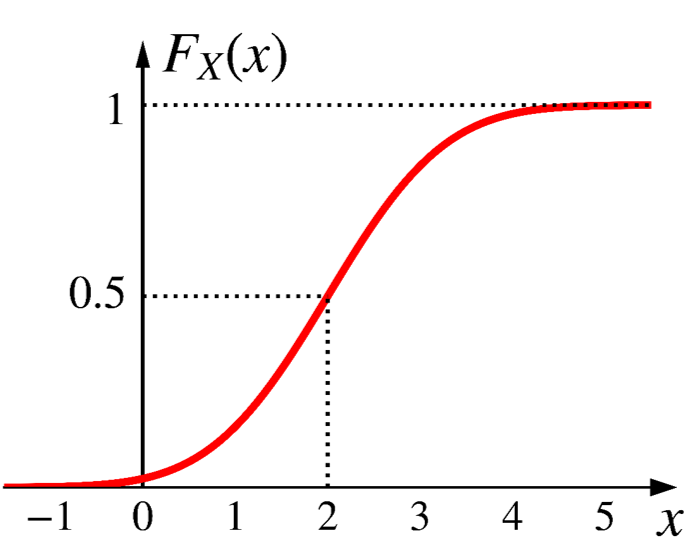
CDF of normal distribution
\[ \begin{aligned} F_X(x)&=\text{P}(X \leq x) \\ \\ &=\int_{-\infty}^x \frac{1}{\sigma\sqrt{2\pi}}e^{-\frac{1}{2}\big(\frac{t-\mu}{\sigma}\big)^2}dt \\ \\ &=\frac{1}{\sigma\sqrt{2\pi}}\int_{-\infty}^x e^{-\frac{1}{2}\big(\frac{t-\mu}{\sigma}\big)^2}dt \\ \end{aligned} \]
Unfortunately, there is no closed-form expression for the integration above.
CDF of standard normal distribution

\[ F_Z(z)=\Phi(z)=\text{P}(Z \leq z)=\frac{1}{\sqrt{2\pi}}\int_{-\infty}^z e^{-\frac{t^2}{2}}dt \]
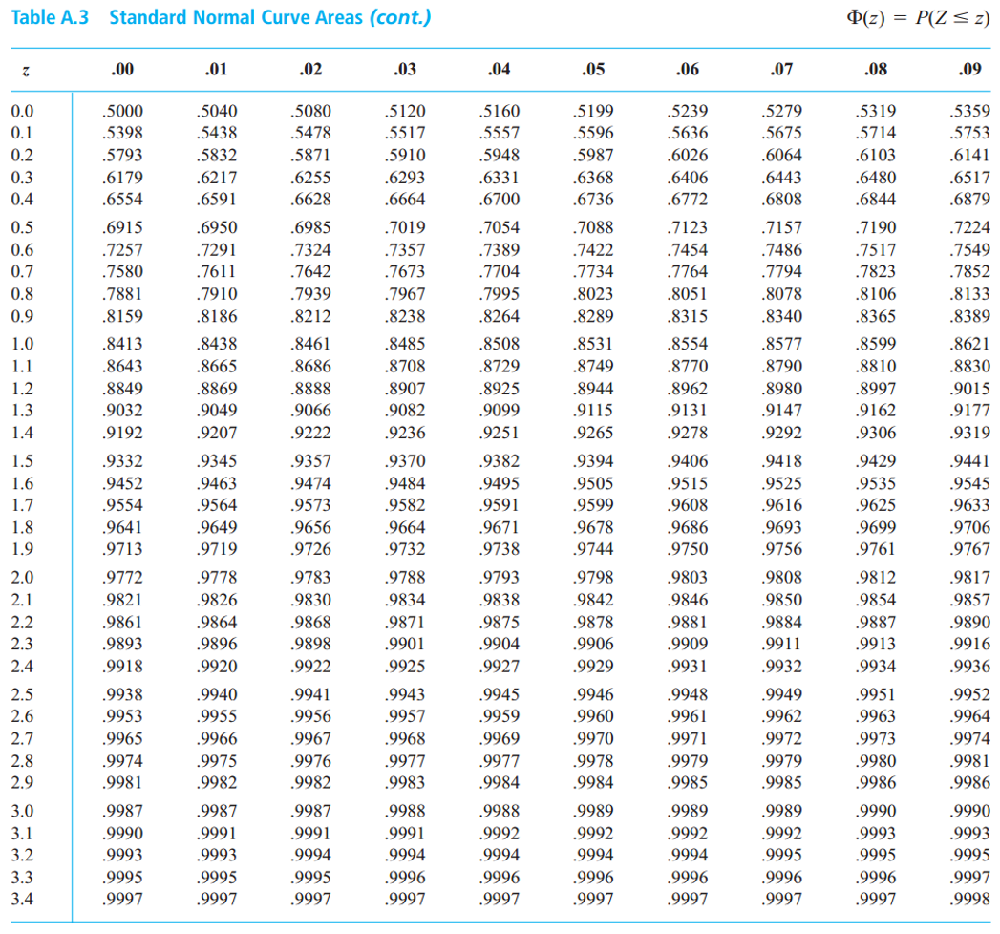
Standard normal table (or Z table)
- The table only contains values of \(\Phi(z)\) for \(z \geq 0\).
- What if \(z < 0\)?
More generally, we have
\[ \Phi(-z)=1-\Phi(z), \;\; \text{for all $z$.} \]
Exercise
- Assume the annual snowfall in Dearborn follows a normal distribution with
- a mean of 60 inches
- a standard deviation of 20 inches
- What is the probability this year has 80+ inches snow?
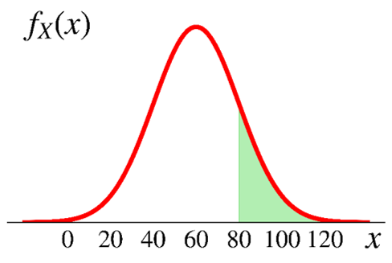
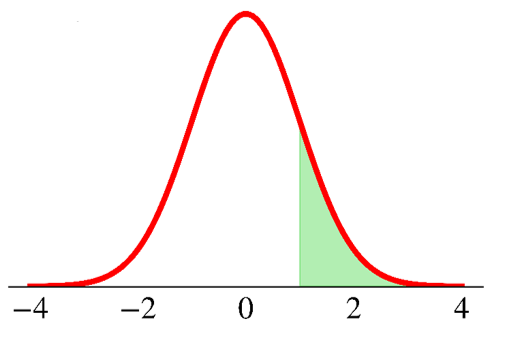
\[ X \sim \text{N}\big(\mu, \sigma^2\big) \]
What is the probability that \(X\) takes values within one standard deviation from its mean?
\[ \text{P}(\mu - \sigma < X < \mu + \sigma) = \;? \]
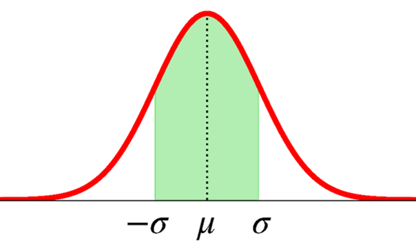
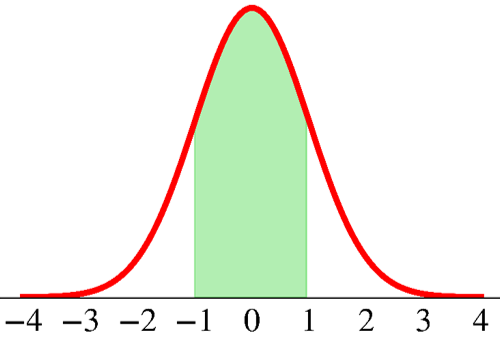
\[ X \sim \text{N}\big(\mu, \sigma^2\big) \]
What is the probability that \(X\) takes values within two standard deviation from its mean?
\[ \text{P}(\mu - 2\sigma < X < \mu + 2\sigma) = \;? \]
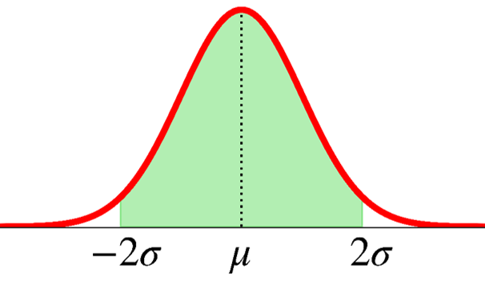
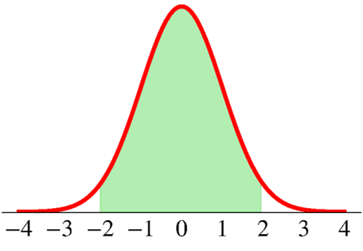
\[ X \sim \text{N}\big(\mu, \sigma^2\big) \]
What is the probability that \(X\) takes values within three standard deviation from its mean?
\[ \text{P}(-3\sigma < X < 3\sigma) = \;? \]
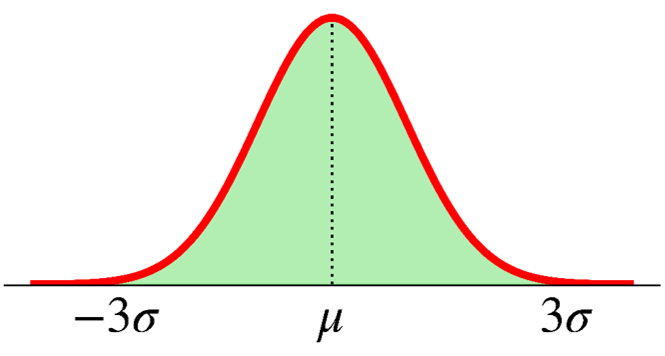
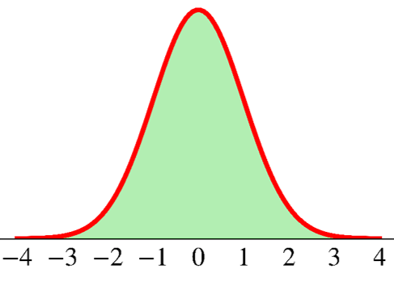
68-95-99.7 rule
\[ X \sim \text{N}\big(\mu, \sigma^2\big) \]
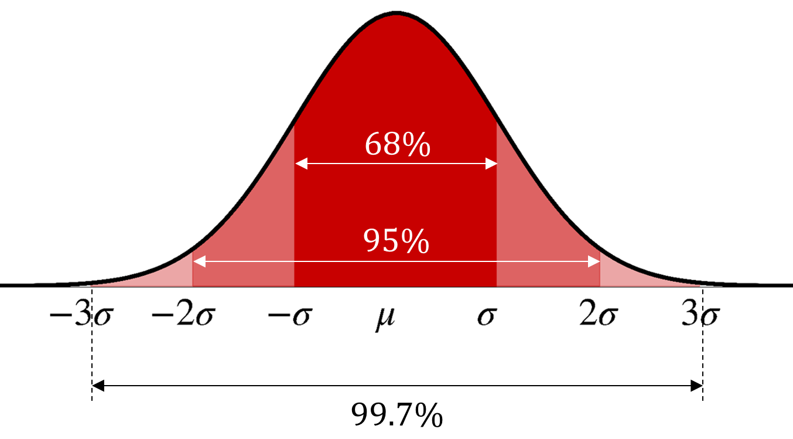
\[ \text{P}(\mu - 6\sigma < X < \mu + 6 \sigma)=99.99966\% \]
The procedure to get the normal CDF
Standardize \(X\) to obtain the standard normal \(Z\) \[\small{Z=\frac{X-\mu}{\sigma}}\]
Obtain the CDF value from the \(Z\) table
\[ \small{ \begin{aligned} \text{P}(X < x)&=\text{P}\bigg(\frac{X-\mu}{\sigma} < \frac{x-\mu}{\sigma}\bigg)\\ &=\text{P}\bigg(Z < \frac{x-\mu}{\sigma}\bigg) =\Phi\bigg(\frac{x-\mu}{\sigma}\bigg) \\ \end{aligned} } \]
Getting normal CDF in Python
Go to Google Colab and sign in. Open a new notebook.
How about \(F_X(x=0)=\text{P}(X \leq 0)\) where \(X \sim \text{N}(1, 3^2)\)?
Mixed random variables
As a final note to Chapter 3 & 4, a random variable could be a mixture of both discrete & continuous.
Consider the following game of tossing a coin
- If it lands on heads, you get $10.
- If it lands on tails, you get $ amount of \(\text{unif}(5, 15)\).